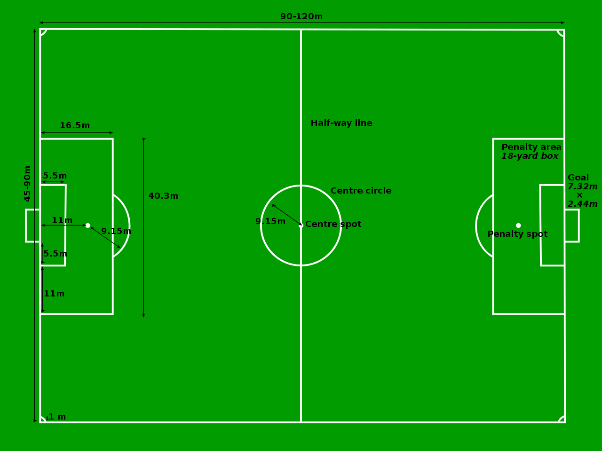

Nogomet
Mihael Kolembus
Nogometom se na bilo koji način bavi preko 250 milijuna muškaraca i žena, dok registriranih aktivnih igrač(ic)a ima oko 40 milijuna. Krovna nogometna organizacija, FIFA, okuplja 209 punopravnih nacionalnih saveza raspoređenih u šest konfederacija. To je sport u kojem se dvije momčadi, momčad se sastoji od 11 igrača, natječu koja će postići vise pogodaka. Sport se odvija na terenu pravokutnog oblika. Teren je podijeljen je na dvije polovice te na svakoj polovici se nalazi prostor vratara, prostor u kojem vratar pokušava spriječiti protivniku momčad od postizanja pogotka. Lopta koju igrači pokušavaju dovesti do protivničkog gola se može igrati svakim dijelom tijela osim rukom, loptu rukom smije dirati samo vratar u svojem označenom prostoru.
Prve igre loptom zabilježene su prije nove ere, cuju u drevnoj Kini, Harpastum u Rimskoj Republici te Fajninda u Staroj Grčkoj, no prvi zapis koji biljezi odražavanje sport sličnog nogometu se dogodilo 1602.g. u Cornwallu. Teren je bio dugačak 200-tinjak metara te su se za dodavanje i ostalo mogle koristiti ruke.

Prvo službeno tijelo osnovano je 1863. godine u Engleskoj zbog razdvajanja nogometa od ragbija. Prvim pravilnikom, donesenim iste godine, uklonjene su osnovne tehnike grubljih inačica sportova „napucavanja lopte”, poznatih pod zbirnom imenicom football, poput saplitanja protivnika te igre rukom. Prvu nogometnu utakmicu, pod službenim pravilima Saveza, odigrali su Barnes F.C. i Richmond F.C. 19. prosinca 1863. godine. Momčadi su se sastojale od petnaestorice igrača no pogodaka nije bilo nakon devedeset minuta igre. Broj igrača konačno je smanjen s ragbijaških petnaest na nogometnih jedanaest nepune tri godine poslije. 1886. osnovan je IFAB, međunarodno tijelo za održavanje i razvoj pravila nogometne igre, čije su odluke konačne i obvezujuće svim FIFA-inim članicama.
Sva pravila su zapisana u IFAB službenom pravilniku, zapisano je 17 pravila, njima je zapisan svaki detalj o igri, od opreme igrača do veličine i težine lopte koja se može koristiti.
Dužina igrališta za međunarodne utakmice trebala bi biti između 100 i 110 metara, a širina bi trebala biti u okviru 65 i 75 metara.
Za ostale utakmice mjere više variraju: dužina između 90 i 120 metara, a širina 45 do 90 metara.
Dužina igrališta mora biti veća nego njegova širina.
Prečka je duga 7.32 metara i spaja dvije stative visoke 2.44 metra.
Iako ih nogometna pravila ne zahtijevaju, za okvir gola je postavljena mreža koja daje sigurnost da li je lopta u golu ili ne.
Peterac se sastoji od gol-linije, dvije linije koje pod pravim kutom ulaze u teren 5.5m , te od linije koja spaja već prije spomenute dvije linije.
Kazneni prostor (još nazvan i šesnaesterac) formiraju gol-linija, dvije linije koje pod pravim kutom ulaze u teren 16.5 metara, te linije koja spaja već spomenute dvije linije.
Ovaj dio terena ima mnoštvo funkcija, dok je jedna od najvažnijih da je to mjesto u kojemu vratar može koristiti svoje ruke.
Kaznena oznaka, ili kolokvijalno, bijela točka, mjesto je s kojega se izvode jedanaesterci. Od gola je udaljena točno 11 metara po sredini.

Vrijeme trajanja nogometne utakmice različito je po uzrastu, kao i eventualni produžetci. Vrijeme trajanja utakmice seniorima i juniorima je 2×45 minuta, dok su produžetci 2×15 minuta. Kadeti igraju 2×40 minuta, a eventualni produžetci su 2×10 minuta. Pionirima utakmica traje 2×35 minuta, te su im eventualni produžetci su 2×5 minuta, dok mlađi pioniri igraju 2×30 minuta, s istim vremenom trajanja produžetaka kao i kod pionira.
Prekršaj (ili faul) u nogometnoj igri je nesportski čin jednoga igrača prema protivničkom igraču. Dosuđivanje prekršaja događa se kada igrači ometaju tijek igre, udaranje, saplitanje i slično. U slučaju prekršaja u šesnaestercu dosuđuje se jedanaesterac.
Nikola Golubović